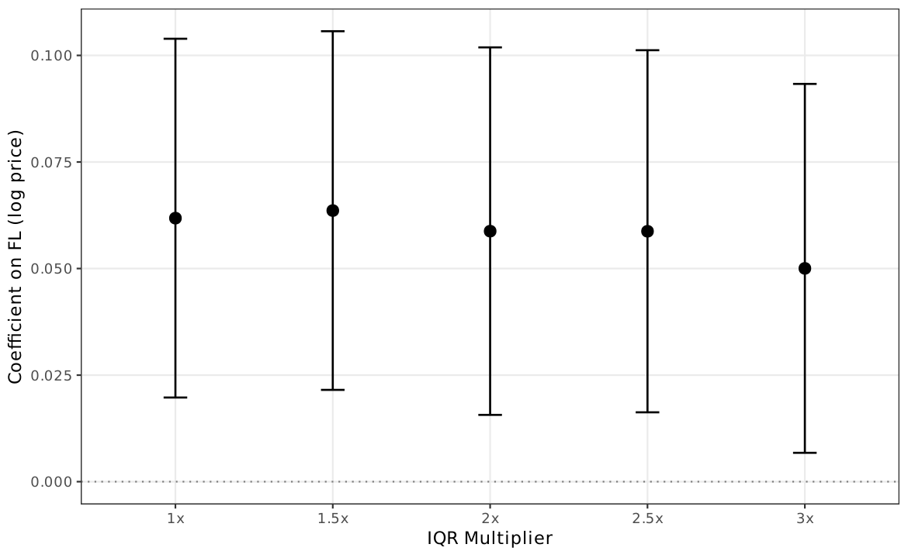
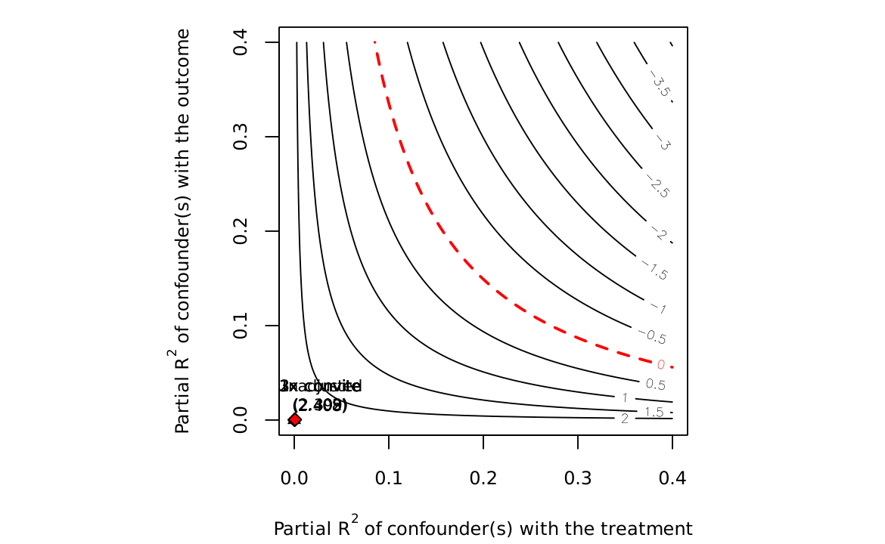
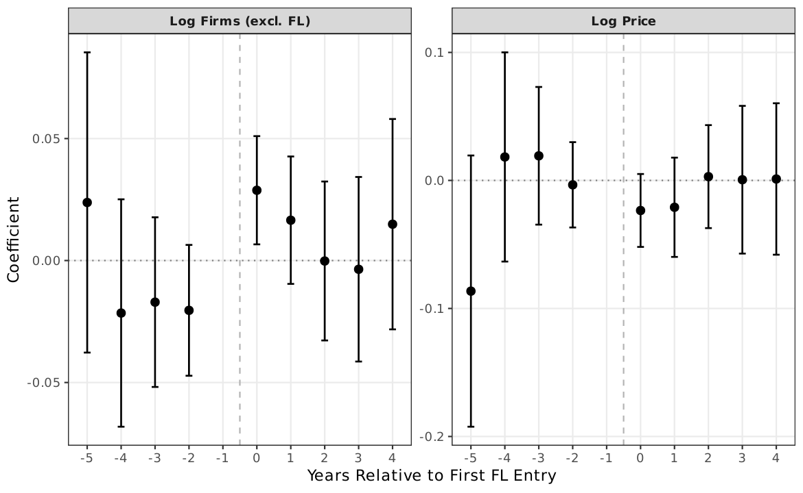
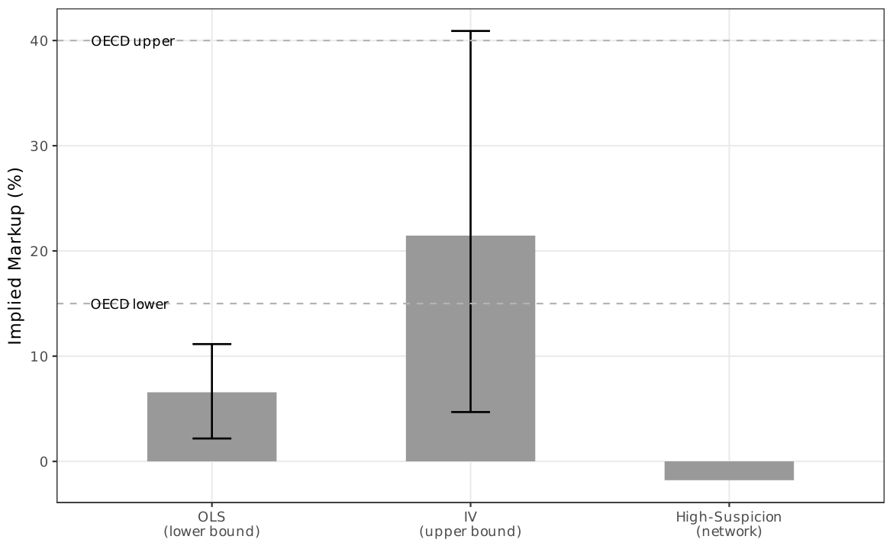
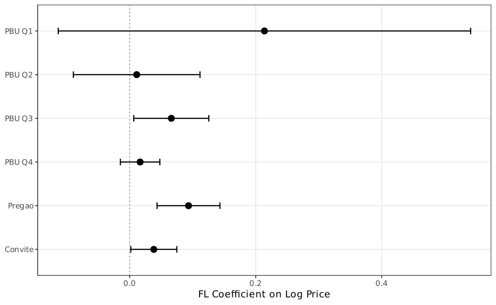

Robustness¶
This page summarizes the six groups of robustness checks and extensions reported in the paper.
1. FL Definition Robustness¶
IQR Threshold Sensitivity¶
The IQR multiplier is varied from 1.0 to 3.0. The price coefficient increases monotonically with the multiplier---stricter thresholds select more extreme cover bidders.
| Multiplier | FL Firms | Coefficient | SE |
|---|---|---|---|
| 1.0x | 3,442 | 0.049** | (0.020) |
| 1.5x (baseline) | 2,735 | 0.064* | (0.022) |
| 2.0x | 2,164 | 0.076*** | (0.024) |
| 3.0x | 1,456 | 0.089*** | (0.028) |
{kind=link}

Low-Win-Rate Variants¶
Relaxing the zero-win-rate requirement to < 1% and < 2% produces stable coefficients.
Cross-Fitting¶
FL firms defined using odd years, regressions estimated on even years (and vice versa). The cross-fold average (0.036) is attenuated relative to the full-sample OLS (0.064) but remains positive.
Temporal FL Definition¶
Rolling 3-year windows yield a coefficient of 0.070 (\(p < 0.01\)), close to the baseline 0.064.
2. Sample and Specification Robustness¶
| Check | Coefficient | \(N\) | Note |
|---|---|---|---|
| Unrestricted sample | 0.063 | 2,875,653 | Removing item-type restriction |
| CEM matching | 0.077 | 969,751 | Coarsened exact matching |
| IPW matching | 0.055 | 830,194 | Inverse probability weighting |
| Cluster: item (baseline) | SE = 0.022 | ||
| Cluster: PBU | SE = 0.014 | ||
| Cluster: item + PBU | SE = 0.024 | Significant at 1% under all schemes |
Tighter Controls¶
| Column | Added Controls | Coefficient |
|---|---|---|
| (1) | Baseline (item + year + PBU FE) | 0.064*** |
| (2) | + number of genuine bidders | 0.094*** |
| (3) | + log reference price | -0.031 |
| (4) | Item x year FE | 0.074*** |
Bad control: reference price
Column (3) conditions on reference price, which may itself be inflated by cover bidding. The sign reversal is consistent with a bad-control problem (collider bias), not a true robustness failure.
Homogeneous Sub-Samples¶
Item groups are split at the median within-group price CV (proxy for product homogeneity). If the FL effect were driven by quality differences rather than cover bidding, it should vanish in low-CV (homogeneous) groups. Item fixed effects already absorb much cross-item heterogeneity, so the CV split provides an additional dimension of variation.
3. Sensitivity to Unobservables¶
{kind=link}

Robust to omitted variable bias
The robustness value \(RV_{q=1} = 17.5\%\) is a stringent requirement given the rich fixed effects structure (item + year + PBU).
4. Staggered Difference-in-Differences¶
The staggered DiD is reported as a complementary exercise only. Using Callaway & Sant'Anna (2021), the overall ATT is 0.014 (SE = 0.039)---positive but insignificant.
| Metric | Value |
|---|---|
| Market-year observations | 144,168 |
| Treated markets | 1,511 |
| Never-treated markets | 18,266 |
| ATT (log prices) | 0.014 (SE = 0.039) |
| MDE (5%, two-sided) | 0.076 |
| MDE (80% power) | 0.109 |
Underpowered by design
The MDE (0.076) exceeds the OLS estimate (0.064). The design is underpowered for detecting effects of this magnitude, and the paper does not rely on it for identification.
{kind=link}

5. Welfare Analysis¶
| Bound | Coefficient | Welfare Loss | % of Total Spending |
|---|---|---|---|
| OLS (lower bound) | 0.064 | R$ 734 million | 2.4% |
| Cross-fit (intermediate) | 0.036 | R$ 406 million | 1.3% |
| IV (upper bound) | 0.194 | R$ 2.4 billion | 7.8% |
Total BEC procurement spending: R$ 30.8 billion (2009--2019).
{kind=link}

6. Oversight Heterogeneity¶
The FL price coefficient varies by PBU size quartile:
| PBU Size Quartile | Coefficient | SE | Significant? |
|---|---|---|---|
| Q1 (smallest) | 0.214 | (large) | No |
| Q2 | -- | -- | No |
| Q3 | 0.066 | (0.029) | Yes (\(p < 0.05\)) |
| Q4 (largest) | 0.017 | (0.015) | No |
The pattern is broadly consistent with the prediction that detection probability constrains cover bidding: the effect is largest in the smallest PBUs (weakest oversight) and smallest in the largest PBUs (strongest oversight).
{kind=link}
